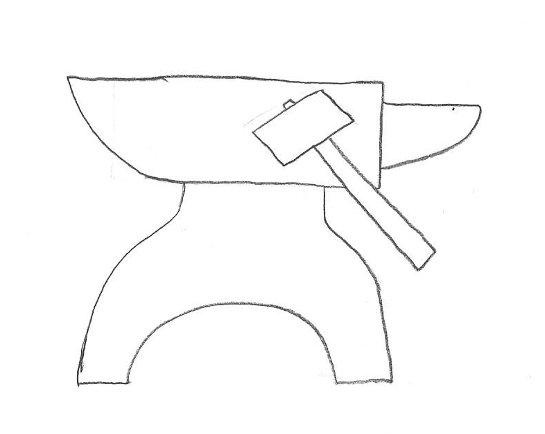

Upgrades and Helpful Facilities
The Item Shop is where you will go to purchase upgrade materials and promotion seals for your characters. It is run by a friendly Ferlum merchant who consistantly gets the best deals.

The Blacksmith is where you will go to purchase weapons and armour. The brothers that run it can also upgrade the armour and weapons if you can get them materials.

You can change the allies you bring with you in the Barracks. Every ally that comes with you have their own unique abilities, so take the ones you need for the battle ahead.
Train the allies you don't take with you with new skills in the Training Ground. Here you can also promote units that have reached the max level for their class. He may be eccentric, but the master at the Training Ground will make sure your allies are at their best!

The Infirmary is where your allies will wait when they have been critically wounded in the battles ahead. The nurse is clumsy but your allies will be ready to fight again with proper care.
Relax at the Dining Hall. Here you can interact with the allies under your command and even meet new ones. Talk with them and they may be inclined to join you.